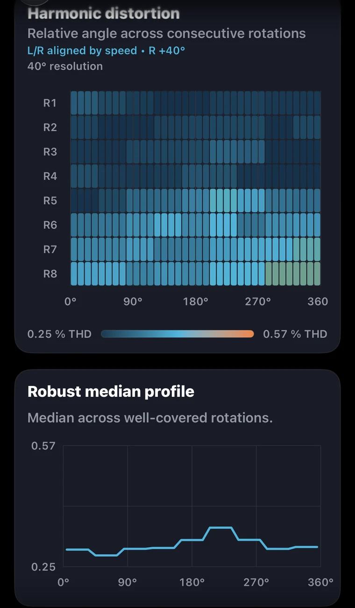
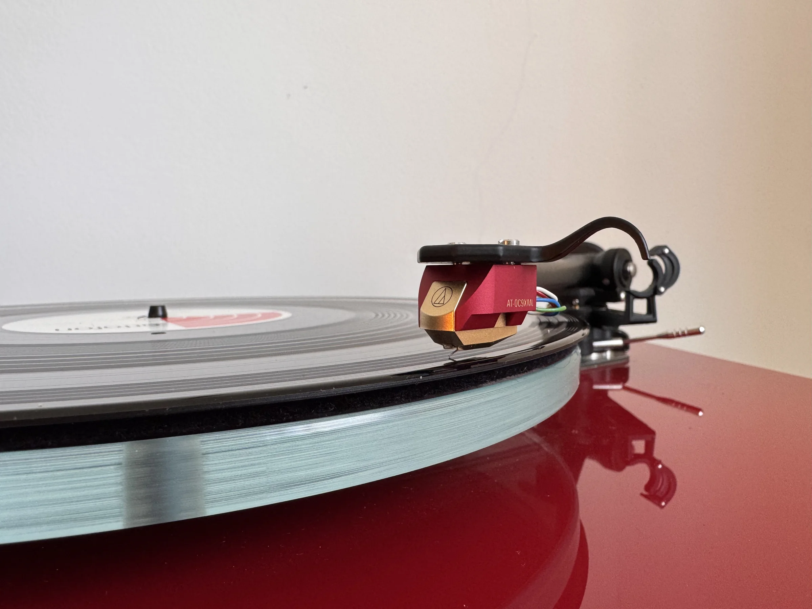
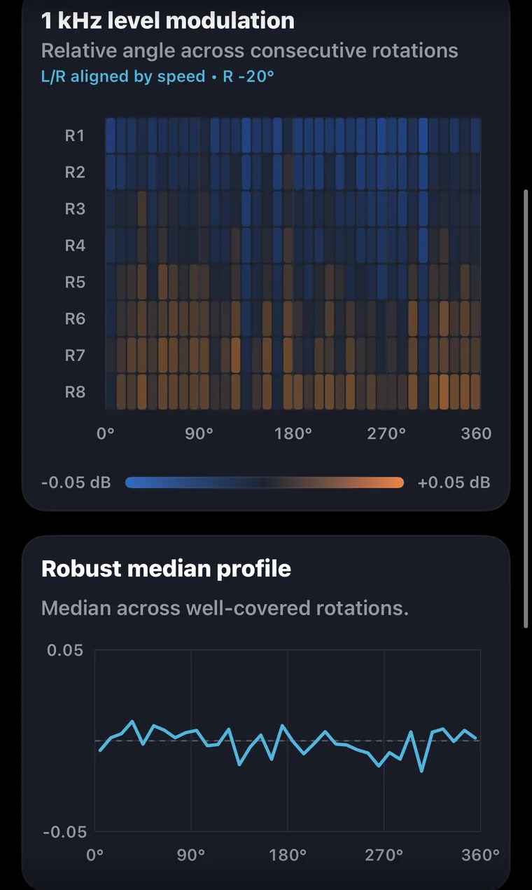
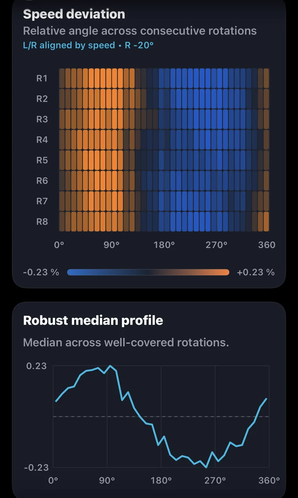

Harmonic distortion

Left channel selected

Groove Scope measurement · GS-2026-0003
A measured view of rotational behaviour, channel performance and harmonic structure in one documented analogue playback chain.
Measurement at a glance
Values are transcribed from the preserved Groove Scope PDF. Together they form a capture-specific view of primary performance and supporting channel behaviour.
Rotation fingerprints
Each source view combines the angular heatmap and robust median profile produced by Groove Scope. Choose L or R independently on each card; no plot has been redrawn.

Left channel selected

Left channel selected

Left channel selected

Left channel selected
On smaller screens, swipe horizontally to compare all four cards. The source views show eight consecutive rotations (R1–R8) where supplied.
What we measured
This record follows a 1 kHz test signal through a Rega P3 turntable, Rega RB330 tonearm and Audio-Technica AT-OC9XML cartridge, through an Audio Research SP20 preamplifier, and into the input identified by the report as EVO4. Groove Scope analysed the captured tone for playback RPM, the error relative to 33 1/3 RPM, settled speed range, DIN-shaped wow and flutter, and unweighted speed, wow and flutter components. It also compared channel level, directional electrical crosstalk, total harmonic distortion and the second through fifth harmonics. The supplied rotation-fingerprint views arrange eight consecutive rotations by relative angular position for four dimensions: harmonic distortion, opposite-channel leakage, 1 kHz level modulation and speed deviation. Those graphics include Groove Scope’s robust median profiles and are presented intact. The result describes this playback chain during the documented capture. Additional context—including phono-stage gain, test-record details, setup settings, capture format and software versions—can extend the review as verified information becomes available.
What stands out
The AT-OC9XML is the standout in the channel results. This capture measured 31.8 dB average separation at 1 kHz, with 30.2 dB left-to-right and 33.5 dB right-to-left; Audio-Technica publishes 27 dB at 1 kHz. The measured channel-balance magnitude is 0.24 dB, comfortably inside the manufacturer’s 1.0 dB figure. The Rega P3 measured 33.34 RPM, +0.02% relative to 33 1/3 RPM, with a settled range of 33.26–33.42 RPM and 0.030% DIN-shaped wow and flutter. THD is 0.29% on the left and 0.37% on the right. The left channel’s moving third-harmonic pattern gives a repeat capture one focused question to revisit without diminishing the excellent separation and balance demonstrated here.
Measurement chain
Verified components are shown in signal order on one continuous line. Components not used or not verified for a particular method remain absent.
Open technical record
The editorial review connects directly to the source report, structured record, checksums, measurement method and original asset archive.
Supporting diagnostics
Unweighted values and directional channel results complement the primary RPM and DIN-shaped measurements with additional setup and comparison context.
| Metric | Result | Record role |
|---|---|---|
| Settled speed range | 33.26–33.42 RPM; span 0.16 RPM | Primary |
| Raw speed variation | ±0.144% RMS; ±0.287% 2-sigma | Unweighted diagnostic |
| Raw wow / flutter | 0.140% / 0.033% RMS | Unweighted diagnostic |
| Electrical crosstalk | L→R -30.2 dB; R→L -33.5 dB | Directional diagnostic |
| Total harmonic distortion | Left 0.29%; right 0.37% | Comparison baseline; repeat planned |